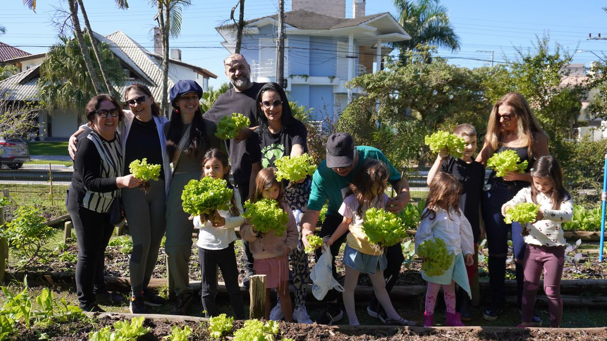

A AJIN representa o bairro diante do poder público e mantém o Bairro mais seguro, a zeladoria e o meio ambiente das áreas comuns. Quem sustenta esse trabalho é o associado.
Não é doação. É a forma como o bairro se organiza para cuidar de si mesmo. Quanto mais gente participa, mais forte é a voz do bairro.

Quem mora, tem imóvel ou atua em Jurerê Internacional. Vale para casa, lote e unidade em condomínio.
Manutenção sustenta a zeladoria das áreas comuns, o meio ambiente, os eventos e a representação do bairro.
Bairro mais seguro sustenta o monitoramento por câmeras e a vigilância patrimonial.
São contribuições separadas e você pode escolher as duas.
A secretaria informa os valores e as formas de pagamento no contato, depois que o pedido chega. Você não paga nada para enviar este formulário.
A Horta Comunitária Manoel Azeredo Saraiva é aberta a associados. Escreva no campo de recado deste formulário ou fale com o escritório, e a secretaria coloca você em contato com o grupo.
Pelas assembleias. A Assembleia Geral Ordinária, a AGO, é a reunião regular de prestação de contas e de escolha dos rumos da Associação. As Assembleias Gerais Extraordinárias, as AGEs, são convocadas quando surge assunto que não pode esperar.
Todo associado é convocado e a presença é o que dá peso à decisão. O escritório envia o edital e a pauta com antecedência.
Envie um pedido com o endereço principal e escreva os demais no campo de recado. A secretaria organiza o cadastro no contato.
Não use este formulário. Fale direto com o escritório no (48) 3282-1590 ou no WhatsApp (48) 99949-7419.
Seus dados chegaram à secretaria da Associação. Vamos conferir as informações e entrar em contato pelo telefone ou pelo e-mail que você informou, para concluir a associação e combinar a forma de contribuição.
Se precisar falar antes disso, o escritório atende em (48) 3282-1590 e no WhatsApp (48) 99949-7419.